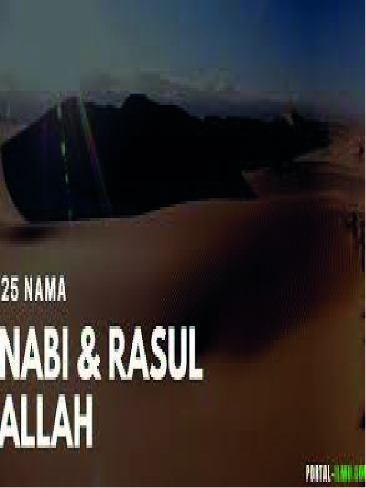

Kisah 25 para Nabi dan Rasul
Perbedaan yang mendasar antara sejarah para nabi seperti dikisahkan dalam Qur’an dengan Alkitab adalah sangat jelas. Alkitab hanya berisikan catatan silsilah keturunan dan beberapa sejarah perorangan, sementara Qur’an Suci ha- nya membahas masa bakti dari seorang nabi sehubungan dengan tujuan besarnya untuk mereformasi umat manusia, yakni .....
Lanjutkan membaca